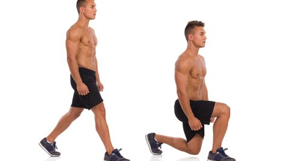

Today w have prepared a little surprise for all of you. This week we will add one new exercise to our circuit routines which will replace the SECOND time squats. ANd this new exercises will be...
Lunges

Lunges - is a basic compound leg movement, which incorporates quadriceps, glutes, as well as biceps femoris and knee ligaments. Also this is one of the few illateral basic movements!
Key points
1. The wider the step, the more emphasis is layed on big glutes muscle of the front leg;
2. To get maximum results from this exercise you have to go down slowly and raise up fast;
3. Breath in, make a step, get down, breath out the same time you push your front leg to get back up
The exercise itself could be divided into 5 phases:
1. Stay straight, foots on the same line on the width of your hips, parallel to each other.
2. Put your arms on your waist, or cross them on your chest, or raise them to the sides.
3. Put one leg in front of the other slowly distributing the weight between legs. Your center of gravity should be strictly in the middle between the legs.
4. Flexing the front leg lower your body until there is a 90 degree angle in the knee of front hand. Depending on the length of the step your other knee will either touch the floor (slightly) or not. Your back leg should be put on fingers, heel up, and the foots should be parallel.
5. Push the front leg and get back up to initial stand.
Exercise overview
While lunges are extremely effective exercise they are still being considered as quite dangerous (if you are doing the incorrect), because they make load on your knees and hips. So follow this guidelines to stay healthy:
1. Your back should be straing during all phases of movement, do not round it up!
2. Do now allow your body to slide forward of backward or either sides (you can raise hands to your sides to make it easier to balance).
3. Look in from of you, your neck should be in one line with your spine.
4. You should make forward steps slowly and controlled, without any sharp movements and shakes.
5. When you go down your knees must be above your foots, also prevent moving knees inward.
6. Your foots should be parallel to each other all the time.
Alternations (easier variants)
There are several alternations to lunges which allows you to change the muscle load. You can do lunges backward, you can do lunges forward, you can do only the pushing movement, while both legs are already in the lunges position (this is a good progression exercise fro lunges, if you are a beginner).
If you have any problems doing lunges, you can also try doing step-ups as their alternations (this exercise targets almost all the same muscle groups):
Tips
Feet position. You can vary your feets position placing them either wider or narrower in order to get the most comfortable variant for you.
Use mat. If you do lunges with knees touching the floor, it would be much better if you put a mat so you would not get hurt. Believe me, hitting the floor with your knee in your last reps is not the most pleasant thing to do.
Don't hurry. Start learning lunges from the easiets variants and steadely work your way to the hardest.
Number of repetitions. I would recommend to start with 10 reps (each leg) in each circle, and after that just look how this is going and either increase or decrease the number of repetitions.